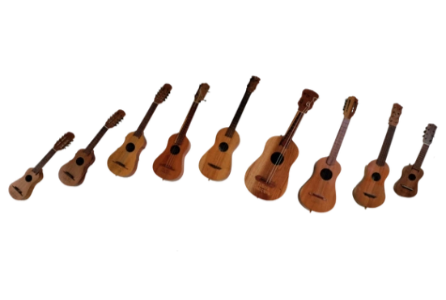
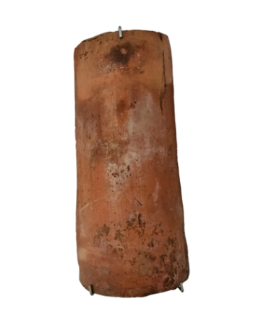
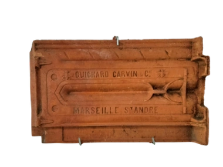
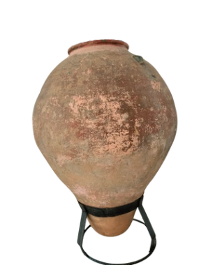
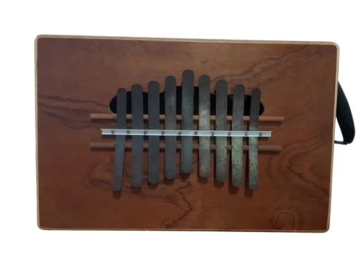
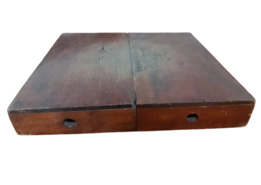

 DOTACIÓN INSTRUMENTAL DEL SON JAROCHO (por tamaño de instrumento) Chaquiste - Jarana tercera Mosquito - Requinto o guitarra de son Jarana primera - Leona o bozarrona Jarana segunda - Quijada de burro o charrasca
 TEJA ESPAÑOLA Y FRANCESA Traídas como lastre en los barcos se utilizaron en el Sotavento para los techos de las casas vernáculas
 TINAJA DE BARRO PINTADA CON ALMAGRE 1950 Perteneció de doña Domitila Alemán Gómez Colección: Familia García Alemán
 TARIMA Se reconoce como un instrumento de percusión que se agrega a la ejecución sonora a partir del zapateado Colección: Tallera Colectiva
 CAJÓN O CAJÓN PERUANO Instrumento de percusión, añadidos al son en grupos contemporáneos Colección: Tallera Colectiva
 CAJÓN O CAJÓN PERUANO Instrumento de percusión, añadidos al son en grupos contemporáneos Colección: Tallera Colectiva